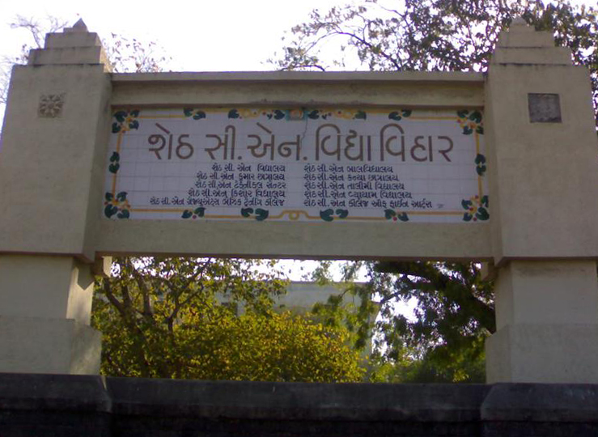

I am Saumya Shah, student at IIIT Hyderabad pursuing B.Tech in Electronics And Communication Engineering(ECE) from Ahmedabad, Gujarat(currently in 1st year)
×
×
Kiran Shah
My mom is my one of two of the biggest inspirations in my entire life. She has taught me the most important thing that I follow every day. She has taught me to always be strong. Being strong relates in many ways. Physically and mentally, I tell myself every day that if I was as strong as my mom, I could do anything I set my mind to.
Mihir Shah
Every girl can agree with me on this one. My father brings out the "worker bee" in me. I feel like I am a great worker because of him. He has taught me to work hard for what I have and be proud and blessed to have the things and people that I have in my life. If I'm not happy where I am his famous words for me are always, "do something to fix it and just keep working towards what you want".
Swasti Shah
Everyone needs a person in their life that shows them how to relax and enjoy life as it comes; well my sister does just that. She has taught me to take a step back and just enjoy it all. Life seems to be less hectic when you take everything step by step. The only reason I don't stress as much is because of her.
×
Friends
I have many friends in my life but I have four friends who are always there for me. They have showed me what it's like to have and be a true friend. I can count on them for anything, and in return I would do the same for them.
"There is nothing on this Earth more to be prized than true friendship." -Thomas Aquinas

×
Sheth C.N. Vidhyalaya
My school was like my Second Home... It taught me many life lessons( without HV !!). It taught me to set my goal and to achieve.The twelve years spent in C. N. Vidyavihar are the most memorable and valuable years of my life.It is proven that maximum growth of a human being happens during the years spent at school - the mental, physical and emotional development is dependent on the atmosphere in school. During school, I had absolute freedom to choose activities of my liking and freedom to share innovative ideas.I can say for sure that only because of this school I changed my dream to reality.
click here for more

×
International Institute Of Information Technology,Hyderabad
Currently I am studying in first year of Engineering( Electronics And Communication Engineering ) at IIIT-Hyderabad.It is an ICT Research University, founded in 1998.It is organized as a cluster of 24 research laboratories and centers - not as departments, unlike other Universities. Nine of every 10 IIIT-H alumni work in ICT research, product architecture, design, or development, at top notch information technology companies, world wide.Hoping same position after four years.....
click here for more
×
Inspiration
Inspiration comes to all of us in many different ways. My inspiration is derived from my mother. She's guided me through some of life's hardest lessons, and she's been there to give me answers to my most troublesome dilemmas. My mother has thoroughly shown me that trust and respect go hand in hand. We have an amazingly unique relationship, as we can talk about anything. We also have the utmost respect for each other. She's always said to me, "I'll trust you until I find out you're lying to me." This has caused me to fear losing her trust, but furthermore. it has driven me to adopt it as my universal motto for trusting others.